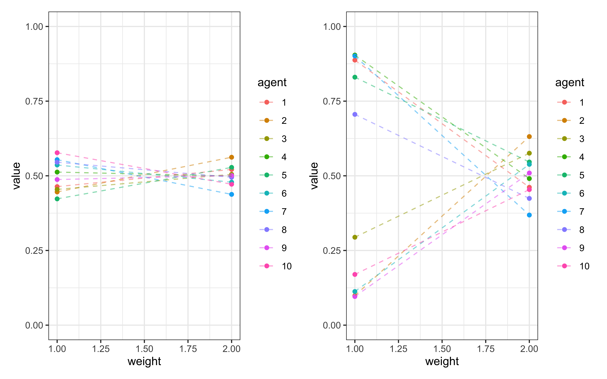
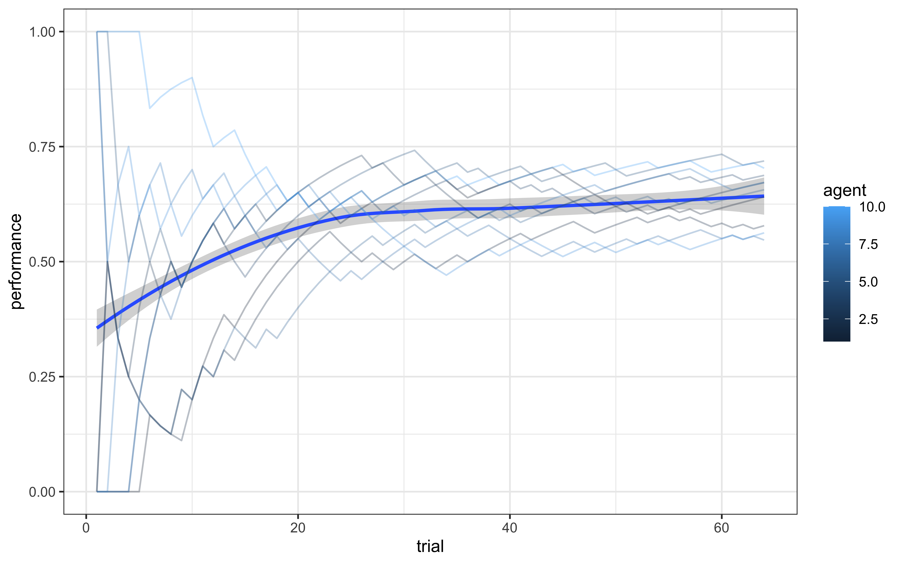
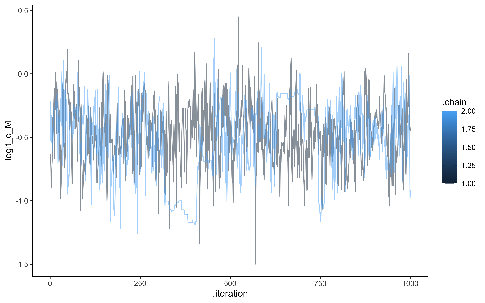
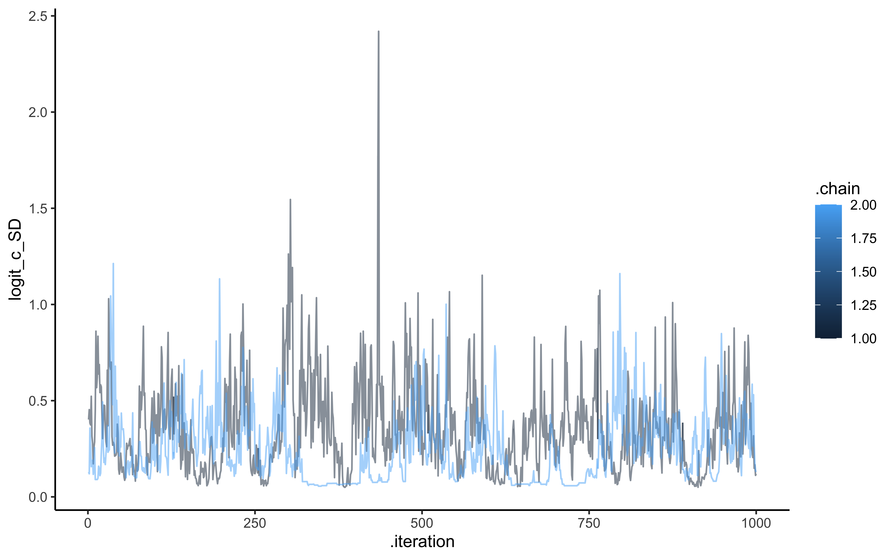
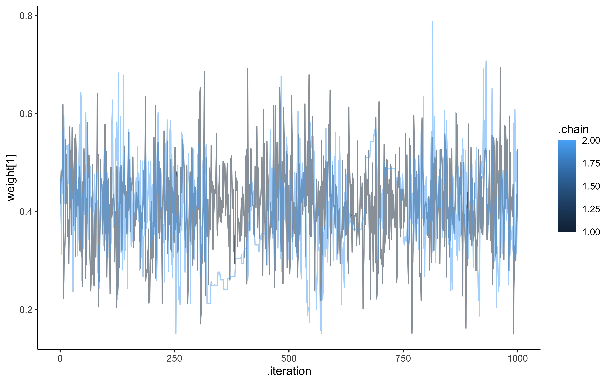
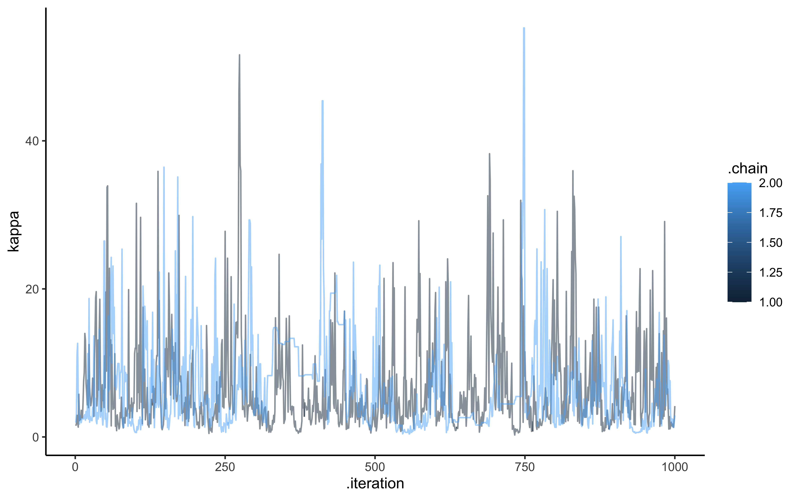
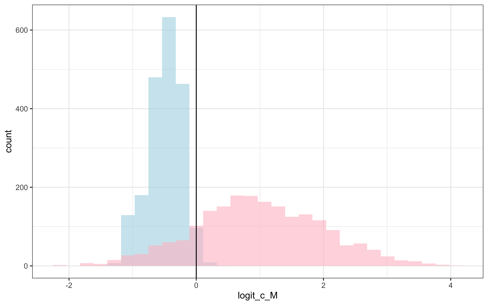
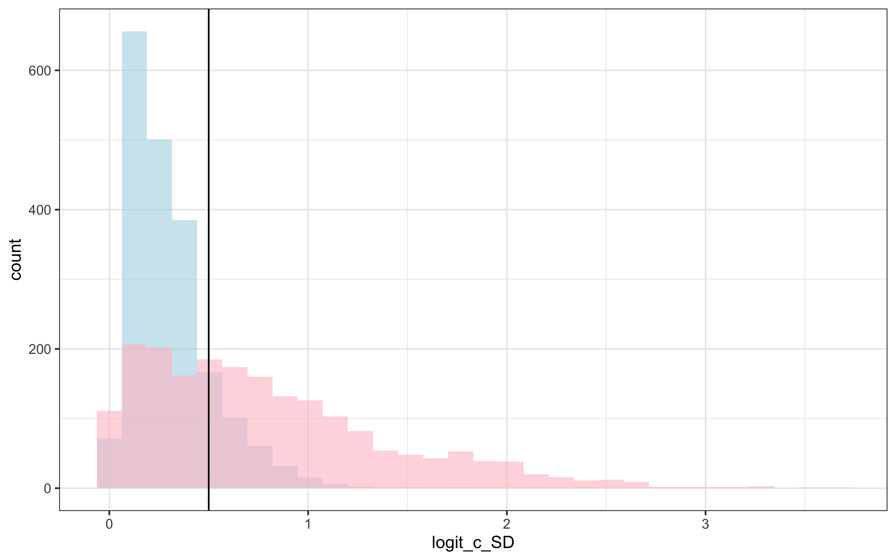
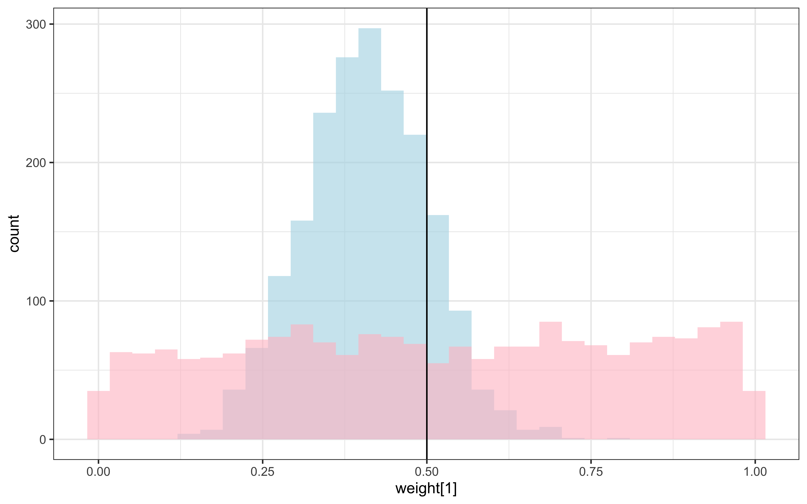
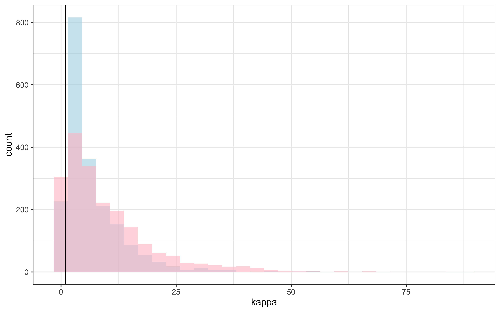

Chapter 12 Introduction to Categorization Models
12.1 The Fundamental Problem of Categorization
Categorization is one of the most fundamental cognitive abilities that humans possess. From early childhood, we learn to organize the world around us into meaningful categories: distinguishing food from non-food, safe from dangerous, or one letter from another. This process of assigning objects to categories is complex, involving perception, memory, attention, and decision-making. How do humans learn categories and make categorization decisions? This seemingly simple question has generated decades of research and theoretical debate in cognitive science. The answer matters not only for understanding human cognition but also for developing artificial intelligence systems, designing educational interventions, and understanding cognitive disorders that affect categorization abilities.
12.2 Why Model Categorization?
Computational models offer a powerful way to formalize theories about categorization. By implementing these theories as computer algorithms, we can:
Explore the consequences of different theoretical assumptions
Make precise predictions about human behavior in categorization tasks
Test competing theories against empirical data
In this module, we will explore three major approaches to modeling categorization:
Exemplar models - which propose that categories are represented by storing individual examples
Prototype models - which suggest categories are represented by an abstract “average” or central tendency
Rule-based models - which posit that categories are represented by explicit rules or decision boundaries
Each approach captures different aspects of human categorization and has generated substantial empirical research. We’ll implement computational versions of each model type, allowing us to compare their behavior and predictions.
12.3 Historical Development of Categorization Models
The computational modeling of categorization has a rich history in cognitive psychology:
12.3.1 Early Views: The Classical Approach
Early theories of categorization followed what is now called the classical view, where categories were defined by necessary and sufficient features. In this view, category membership is an all-or-nothing affair: an object either satisfies the criteria or it doesn’t. While intuitive, this approach struggled to explain many aspects of human categorization, such as:
Graded category membership (some members seem “more typical” than others)
Unclear boundaries between categories
Context-dependent categorization
Family resemblance structures (where no single feature is necessary)
12.3.2 The Prototype Revolution
In the 1970s, Eleanor Rosch’s pioneering work on prototypes challenged the classical view. She demonstrated that categories appear to be organized around central tendencies or “prototypes,” with membership determined by similarity to these prototypes. Objects closer to the prototype are categorized more quickly and consistently. Prototype models formalize this idea by representing categories as their central tendency in a psychological feature space. New items are classified based on their similarity to these prototypes.
12.3.3 The Exemplar Alternative
In the late 1970s and 1980s, researchers like Douglas Medin and Robert Nosofsky proposed that rather than abstracting prototypes, people might store individual exemplars of categories and make judgments based on similarity to these stored examples.
The Generalized Context Model (GCM), developed by Nosofsky, became the standard exemplar model. It proposes that categorization decisions are based on the summed similarity of a new stimulus to all stored exemplars of each category, weighted by attention to different stimulus dimensions.
12.3.4 Rule-Based Models
While similarity-based approaches (both prototype and exemplar) gained prominence, other researchers argued that people sometimes use explicit rules for categorization. Rule-based models propose that categorization involves applying decision rules that partition the stimulus space. Models like Bayesian particle filters, multinomial trees, and also COVIS (COmpetition between Verbal and Implicit Systems) and RULEX (RULe-plus-EXception) formalize these ideas, suggesting that rule learning and application form a core part of human categorization, particularly for well-defined categories. Hybrid Approaches More recent work has focused on hybrid models that incorporate elements of multiple approaches. Models like SUSTAIN (Supervised and Unsupervised STratified Adaptive Incremental Network) and ATRIUM (Attention to Rules and Instances in a Unified Model) propose that humans can flexibly switch between strategies or that different systems operate in parallel.
12.4 The Three Model Classes: Core Assumptions and Predictions
Let’s examine the core assumptions of the three model classes we’ll be implementing:
12.4.1 Exemplar Models: Individual Instances as Category Representations
Core Assumption: Categories are represented by storing individual examples (exemplars) in memory.
Key Features:
No abstraction: All encountered exemplars are stored
Categorization involves computing similarity to all stored exemplars
Similarity is often modeled using an exponential decay function of distance
Different dimensions can receive different attention weights
Memory effects (recency, frequency) can influence categorization
Predictions:
Sensitivity to specific training examples
Better handling of exceptions and atypical category members
Categorization of new items depends on their similarity to specific remembered examples
Learning can be incremental, one example at a time
12.4.2 Prototype Models: Categories as Central Tendencies
Core Assumption: Categories are represented by their central tendencies or prototypes.
Key Features:
Abstraction: Information about individual examples is integrated into a summary representation
Only the prototype (and possibly variance information) is stored for each category
Categorization involves computing similarity to category prototypes
Can be updated incrementally (as in Kalman filter approaches)
Predictions:
The most typical (average) category members will be categorized most easily
Less sensitivity to specific examples
More efficient in terms of memory requirements
May struggle with categories that have complex structures (e.g., non-linear boundaries)
12.4.3 Rule-Based Models: Categories as Decision Boundaries
Core Assumption: Categories are represented by explicit rules that specify the necessary and sufficient conditions for category membership.
Key Features:
- Rules partition the stimulus space into regions corresponding to different categories
*Rules can be simple (single dimension) or complex (combining multiple dimensions)
Focus is on relevant dimensions while irrelevant dimensions are ignored
Rule selection often involves hypothesis testing
Predictions:
Sharp category boundaries
Fast decisions once rules are learned
Selective attention to rule-relevant dimensions
Less sensitivity to similarity once rules are established
Often involves a period of hypothesis testing and rule discovery
In this module, we’ll implement computational versions of these models and apply them to simulated and real data, allowing us to directly compare their behavior and evaluate their cognitive plausibility.
12.5 Our Implementation Approach
We’ll implement three models representing each major theoretical approach:
Generalized Context Model (GCM) - A canonical exemplar model where categorization is based on similarity to all stored examples
Kalman Filter Prototype Model - A dynamic prototype model that incrementally updates category representations as new examples are encountered
Bayesian Particle Filter for Rules - A rule-based model that maintains and updates a distribution over potential categorization rules
Each implementation will follow a similar structure:
Core model function that simulates the categorization process
Stan implementation for parameter estimation
Simulation framework for generating synthetic data
Parameter recovery analyses
Model comparison framework
Let’s begin with the Generalized Context Model (GCM), which has been the gold standard exemplar model in the field.
12.6 The Generalized Context Model (GCM)
12.6.1 Mathematical Foundations and Cognitive Principles
The Generalized Context Model (GCM), developed by Robert Nosofsky in the 1980s, represents one of the most influential exemplar-based approaches to categorization. Unlike models that abstract category information into prototypes or rules, the GCM proposes that people store individual exemplars in memory and make categorization decisions based on similarity to these stored examples.
12.6.2 Core Assumptions of the GCM
Memory for Instances: Every encountered example is stored in memory with its category label. Similarity Computation: Categorization decisions are based on computing the similarity between a new stimulus and all stored exemplars.
Selective Attention: Attention can be distributed differently across stimulus dimensions, effectively stretching or shrinking the psychological space.
Choice Probability: The probability of assigning a stimulus to a category is proportional to its summed similarity to exemplars of that category.
12.6.3 Mathematical Formulation
The GCM is formalized through the following equations:
- Distance Calculation The psychological distance between two stimuli in a multidimensional space is computed as:
\[d_{ij} = \left[ \sum_{m=1}^{M} w_m |x_{im} - x_{jm}|^r \right]^{\frac{1}{r}}\]
Where:
\(d_{ij}\) is the distance between stimuli i and j \(x_{im}\) is the value of stimulus i on dimension m \(w_m\) is the attention weight for dimension m (constrained so that \(\sum_{m} w_m = 1\))
r determines the distance metric (typically 1 for city-block or 2 for Euclidean)
In our implementation, we’ll use the city-block metric (r=1), which is appropriate for separable stimulus dimensions:
- Similarity Computation Similarity is an exponentially decreasing function of distance:
\[\eta_{ij} = e^{-c \cdot d_{ij}}\]
Where:
\(\eta_{ij}\) is the similarity between stimuli i and j
c is the sensitivity parameter that determines how quickly similarity decreases with distance
A higher value of c means similarity decreases more rapidly with distance. This can represent factors like increased discriminability, reduced generalization, or greater specificity in memory.
Let’s assess how similarity changes with distance for different values of the sensitivity parameter c:
# Let's assess similarity
dd <- tibble(
expand_grid(
distance = c(0,.1,.2, .3,.4,.5,1,1.5,2,3,4,5,6),
c = c(0.1, 0.2, 0.5, 0.7, 1, 1.5, 2, 3, 4, 5, 6))) %>%
mutate(
similarity = similarity(distance, c)
)
dd %>% mutate(c = factor(c)) %>%
ggplot() +
geom_line(aes(distance, similarity, group = c, color = c)) +
theme_bw()
From this visualization, we can observe:
With low c values (e.g., 0.1), similarity remains high even for distant stimuli
With high c values (e.g., 6.0), similarity drops rapidly even for small distances
At intermediate values, there’s a more gradual decrease in similarity
- Category Response Probability
The probability of assigning a stimulus i to category A is:
\[P(A|i) = \frac{\beta \sum_{j \in A} \eta_{ij}}{\beta \sum_{j \in A} \eta_{ij} + (1-\beta) \sum_{j \in B} \eta_{ij}}\]
Where:
\(\sum_{j \in A} \eta_{ij}\) is the summed similarity to all exemplars in category A
\(\beta\) is a potential response bias for category A (often set to 0.5 for unbiased responding)
In our implementation, we calculate this probability as shown in the GCM agent function below.
12.6.4 The GCM Agent Implementation
With distance and similarity functions in place, we now need to implement an agent that can:
Observe stimuli
Store them into categories according to feedback
Compare new stimuli to stored exemplars to assess which category is more likely
The agent operates in two modes:
Cold start: If not enough stimuli have been observed to have exemplars in each category, the agent picks a category at random
Similarity-based choice: Otherwise, it calculates similarity to each category’s exemplars and makes a probabilistic choice
### generative model ###
gcm <- function(w, c, obs, cat_one, quiet = TRUE) {
# create an empty list to save probability of saying "1" for each trial
r <- c()
ntrials <- nrow(obs)
for (i in 1:ntrials) {
# If quiet is FALSE, print every ten trials
if (!quiet && i %% 10 == 0) {
print(paste("i =", i))
}
# if this is the first trial, or there any category with no exemplars seen yet, set the choice to random
if (i == 1 || sum(cat_one[1:(i - 1)]) == 0 || sum(cat_one[1:(i - 1)]) == (i - 1)) {
r <- c(r, .5)
} else {
similarities <- c()
# for each previously seen stimulus assess distance and similarity
for (e in 1:(i - 1)) {
sim <- similarity(distance(obs[i, ], obs[e, ], w), c)
similarities <- c(similarities, sim)
}
# Calculate prob of saying "1" by dividing similarity to 1 by the sum of similarity to 1 and to 2
numerator <- mean(similarities[cat_one[1:(i - 1)] == 1])
denominator <- mean(similarities[cat_one[1:(i - 1)] == 1]) + mean(similarities[cat_one[1:(i - 1)] == 0])
r <- c(r, numerator / denominator)
}
}
return(rbinom(ntrials, 1, r))
}Let’s break down this implementation step by step:
Initialization: The function sets up an empty vector r to store the probability of assigning each stimulus to category 1.
Trial Loop: For each trial (stimulus presentation):
First Trial or Missing Categories: If this is the first trial or if one of the categories hasn’t been observed yet, the model can’t make an informed decision and defaults to random guessing (probability 0.5).
Similarity Computation: For later trials, the model computes the similarity between the current stimulus and all previously observed stimuli.
Response Probability: The model calculates the probability of assigning the stimulus to category 1 based on the relative similarity to exemplars of each category. Note that we use the mean similarity rather than the sum. This is a common variant that helps the model maintain stable predictions as the number of exemplars grows.
Decision: Finally, the model generates actual binary decisions by sampling from a Bernoulli distribution with the calculated probabilities.
This implementation captures the core cognitive processes proposed by the GCM:
Storage of exemplars in memory
Computation of similarity to all stored exemplars
Categorization based on relative similarity to different categories
Probabilistic response generation
12.6.5 Simulating Behavior with the GCM
To understand how the GCM behaves under different conditions, we can simulate its behavior on categorization tasks. First, we need to set up a task environment with stimuli, features, and category assignments.
We will rely on a setup from Kruschke 1993. Participants go through 8 blocks of trials. Within each block, participants see 8 stimuli, the same across every block. Each stimulus has to be categorised (classified) as belonging to either category A or category B. After categorizing a stimulus, feedback is given, so that the participant knows which category the stimulus truly belongs to.
The stimuli differ along two continuous dimensions (more specifically the height of a square and the position of a line with it).
# Defining the stimuli, their height and position features, and their category
stimulus <- c(5,3,7,1,8,2,6,4)
height <- c(1,1, 2,2, 3,3, 4,4)
position <- c(2,3, 1,4, 1,4, 2,3)
category <- as.factor(c(0,0, 1,0, 1,0, 1,1))
# Making this into a tibble
stimuli <- tibble(stimulus, height, position, category)
# Plotting to make sure all looks right
ggplot(stimuli, aes(position, height, color = category, label = stimulus)) +
geom_point(shape = 16, size = 3) +
geom_label() +
geom_abline(intercept = 0, slope = 1, linetype = "dashed") +
theme_bw()
# Generating the sequence of stimuli in the full experiment
sequence <- c()
for (i in 1:8) {
temp <- sample(seq(8), 8, replace = F)
sequence <- append(sequence, temp)
}
experiment <- tibble(stimulus = sequence, height = NA, position = NA, category = NA)
for (i in seq(nrow(experiment))) {
experiment$height[i] <- stimuli$height[stimuli$stimulus == experiment$stimulus[i]]
experiment$position[i] <- stimuli$position[stimuli$stimulus == experiment$stimulus[i]]
experiment$category[i] <- as.numeric(as.character(stimuli$category[stimuli$stimulus == experiment$stimulus[i]]))
}This setup creates a categorization task with:
8 unique stimuli varying along two dimensions (height and position)
2 categories (0 and 1)
A randomized sequence of 64 trials (8 blocks of 8 stimuli each)
The visualization helps us understand the category structure: stimuli are arranged in a 4×2 grid, with category membership indicated by color. The dashed line shows that the categories are not perfectly linearly separable. Now we can simulate how agents with different parameter settings would perform on this task:
# Function to simulate responses with different parameter settings
simulate_responses <- function(agent, w, c) {
observations <- experiment %>%
dplyr::select(c("height", "position"))
category <- experiment$category
if (w == "equal") {
weight <- rep(1 / 2, 2)
} else if (w == "skewed1") {
weight <- c(0, 1)
} else if (w == "skewed2") {
weight <- c(0.1, 0.9)
}
# simulate responses
responses <- gcm(
weight,
c,
observations,
category
)
tmp_simulated_responses <- experiment %>%
mutate(
trial = seq(nrow(experiment)),
sim_response = responses,
correct = ifelse(category == sim_response, 1, 0),
performance = cumsum(correct) / seq_along(correct),
c = c,
w = w,
agent = agent
)
return(tmp_simulated_responses)
}This function allows us to:
- Vary attention weight settings (equal or skewed toward different dimensions)
- Vary the sensitivity parameter (c)
- Generate responses for multiple simulated agents
- Track performance (accuracy) over trials
Let’s run simulations across a range of parameter values:
if (regenerate_simulations) {
# simulate responses across parameter combinations
plan(multisession, workers = availableCores())
param_df <- dplyr::tibble(
expand_grid(
agent = 1:10,
c = seq(.1, 2, 0.2),
w = c("equal", "skewed1", "skewed2")
)
)
simulated_responses <- future_pmap_dfr(param_df,
simulate_responses,
.options = furrr_options(seed = TRUE)
)
# Save model fits
write_csv(simulated_responses, "simdata/W11_gcm_single_simulated_responses.csv")
cat("Simulation saved.\n")
} else {
# Load existing model fits
simulated_responses <- read_csv("simdata/W11_gcm_single_simulated_responses.csv")
cat("Simulation loaded.\n")
}## Simulation loaded.We can then visualize how different parameter settings affect learning and performance:
p3 <- simulated_responses %>%
mutate(w = as.factor(w)) %>%
ggplot(aes(trial, performance, group = w, color = w)) +
geom_smooth() +
theme_bw() +
facet_wrap(c ~ .)
p4 <- simulated_responses %>%
mutate(c = as.factor(c)) %>%
ggplot(aes(trial, performance, group = c, color = c)) +
geom_smooth() +
theme_bw() +
facet_wrap(w ~ .)
p3 + p4
From these plots, we can observe:
Attention Weights Matter: For this particular category structure, the equal weights condition generally performs better than the highly skewed weight conditions. This makes sense given that both dimensions are relevant for categorization in our stimulus set.
Sensitivity Parameter Affects Performance: The optimal value of c depends on the category structure. Too low (< 0.5) and the model overgeneralizes; too high (> 1.5) and it may be too specific. Values around 1.0-1.5 typically produce the best performance with our stimulus set.
Interaction Between Parameters: The effect of the sensitivity parameter c often depends on the attention weight distribution. For example, with skewed weights, higher c values may be needed to compensate for the lost information from the ignored dimension.
12.6.6 Implementing the GCM in Stan for Parameter Estimation
While simulating the GCM helps us understand its behavior, we ultimately want to estimate its parameters from observed categorization data. To do this, we implement the GCM in Stan, allowing for Bayesian parameter estimation.
gcm_single_stan <- "
// Generalized Context Model (GCM)
data {
int<lower=1> ntrials; // number of trials
int<lower=1> nfeatures; // number of predefined relevant features
array[ntrials] int<lower=0, upper=1> cat_one; // true responses on a trial by trial basis
array[ntrials] int<lower=0, upper=1> y; // decisions on a trial by trial basis
array[ntrials, nfeatures] real obs; // stimuli as vectors of features
real<lower=0, upper=1> b; // initial bias for category one over two
// priors
vector[nfeatures] w_prior_values; // concentration parameters for dirichlet distribution <lower=1>
array[2] real c_prior_values; // mean and variance for logit-normal distribution
}
transformed data {
array[ntrials] int<lower=0, upper=1> cat_two; // dummy variable for category two over cat 1
array[sum(cat_one)] int<lower=1, upper=ntrials> cat_one_idx; // array of which stimuli are cat 1
array[ntrials-sum(cat_one)] int<lower=1, upper=ntrials> cat_two_idx; // array of which stimuli are cat 2
int idx_one = 1; // Initializing
int idx_two = 1;
for (i in 1:ntrials){
cat_two[i] = abs(cat_one[i]-1);
if (cat_one[i]==1){
cat_one_idx[idx_one] = i;
idx_one +=1;
} else {
cat_two_idx[idx_two] = i;
idx_two += 1;
}
}
}
parameters {
simplex[nfeatures] w; // simplex means sum(w)=1
real logit_c;
}
transformed parameters {
// parameter c
real<lower=0, upper=2> c = inv_logit(logit_c)*2; // times 2 as c is bounded between 0 and 2
// parameter r (probability of response = category 1)
array[ntrials] real<lower=0.0001, upper=0.9999> r;
array[ntrials] real rr;
for (i in 1:ntrials) {
// calculate distance from obs to all exemplars
array[(i-1)] real exemplar_sim;
for (e in 1:(i-1)){
array[nfeatures] real tmp_dist;
for (j in 1:nfeatures) {
tmp_dist[j] = w[j]*abs(obs[e,j] - obs[i,j]);
}
exemplar_sim[e] = exp(-c * sum(tmp_dist));
}
if (sum(cat_one[:(i-1)])==0 || sum(cat_two[:(i-1)])==0){ // if there are no examplars in one of the categories
r[i] = 0.5;
} else {
// calculate similarity
array[2] real similarities;
array[sum(cat_one[:(i-1)])] int tmp_idx_one = cat_one_idx[:sum(cat_one[:(i-1)])];
array[sum(cat_two[:(i-1)])] int tmp_idx_two = cat_two_idx[:sum(cat_two[:(i-1)])];
similarities[1] = sum(exemplar_sim[tmp_idx_one]);
similarities[2] = sum(exemplar_sim[tmp_idx_two]);
// calculate r[i]
rr[i] = (b*similarities[1]) / (b*similarities[1] + (1-b)*similarities[2]);
// to make the sampling work
if (rr[i] > 0.9999){
r[i] = 0.9999;
} else if (rr[i] < 0.0001) {
r[i] = 0.0001;
} else if (rr[i] > 0.0001 && rr[i] < 0.9999) {
r[i] = rr[i];
} else {
r[i] = 0.5;
}
}
}
}
model {
// Priors
target += dirichlet_lpdf(w | w_prior_values);
target += normal_lpdf(logit_c | c_prior_values[1], c_prior_values[2]);
// Decision Data
target += bernoulli_lpmf(y | r);
}
generated quantities {
// Prior samples, posterior predictions, and log likelihood calculations...
real w_prior;
real c_prior;
w_prior = dirichlet_rng(w | w_prior_values);
c_prior = inv_logit(normal_rng(c_prior_values[1], c_prior_values[2]));
}"
# Write the model to a file
write_stan_file(
gcm_single_stan,
dir = "stan/",
basename = "W11_gcm_single.stan"
)## [1] "/Users/au209589/Dropbox/Teaching/AdvancedCognitiveModeling23_book/stan/W11_gcm_single.stan"The Stan implementation follows the same mathematical principles as our R implementation but is structured for parameter estimation. Key differences include:
Parameter Constraints: Attention weights are implemented as a simplex, ensuring they sum to 1, and the sensitivity parameter c is constrained to a reasonable range.
Preprocessing: The transformed data block creates useful indices for efficient computation.
Numerical Stability: The implementation includes steps to avoid numerical issues, such as bounding probabilities away from 0 and 1.
Priors: Priors for attention weights (Dirichlet) and sensitivity (normal on logit scale) are needed for Bayesian inference.
Let’s fit this model to some of our simulated data to see how well it recovers the true generating parameters:
d <- simulated_responses %>% subset(
c == "1.1" & w == "equal"
)
gcm_data <- list(
ntrials = nrow(d),
nfeatures = 2,
cat_one = d$category,
y = d$sim_response,
obs = as.matrix(d[, c("height", "position")]),
b = 0.5,
w_prior_values = c(1, 1),
c_prior_values = c(0, 1)
)
# Check if we need to regenerate model fits
if (regenerate_simulations) {
# Compile Stan models
mod_gcm_single <- cmdstan_model(
file.path("stan/W11_gcm_single.stan"),
cpp_options = list(stan_threads = TRUE)
)
samples_gcm <- mod_gcm_single$sample(
data = gcm_data,
seed = 123,
chains = 1,
parallel_chains = 1,
threads_per_chain = 1,
iter_warmup = 1000,
iter_sampling = 1000,
refresh = 500
)
# Save model fits
samples_gcm$save_object("simmodels/W11_gcm_single.rds")
cat("Models fitted and saved.\n")
} else {
# Load existing model fits
samples_gcm <- readRDS("simmodels/W11_gcm_single.rds")
cat("Loaded existing model fits.\n")
}## Loaded existing model fits.Now we can check the parameter recovery:
## # A tibble: 1,285 × 10
## variable mean median sd mad q5 q95 rhat ess_bulk ess_tail
## <chr> <dbl> <dbl> <dbl> <dbl> <dbl> <dbl> <dbl> <dbl> <dbl>
## 1 lp__ -372. -372. 0.997 0.732 -374. -371. 1.00 401. 658.
## 2 w[1] 0.490 0.489 0.0563 0.0557 0.393 0.581 0.999 883. 492.
## 3 w[2] 0.510 0.511 0.0563 0.0557 0.419 0.607 0.999 883. 492.
## 4 logit_c 0.193 0.194 0.166 0.163 -0.0917 0.464 1.00 814. 571.
## 5 c 1.10 1.10 0.0817 0.0804 0.954 1.23 1.00 813. 571.
## 6 r[1] 0.5 0.5 0 0 0.5 0.5 NA NA NA
## 7 r[2] 0.5 0.5 0 0 0.5 0.5 NA NA NA
## 8 r[3] 0.369 0.370 0.0169 0.0174 0.341 0.396 1.00 745. 478.
## 9 r[4] 0.655 0.656 0.0226 0.0214 0.616 0.691 1.00 894. 549.
## 10 r[5] 0.491 0.491 0.0502 0.0491 0.406 0.572 0.999 882. 454.
## # ℹ 1,275 more rowsdraws_df <- as_draws_df(samples_gcm$draws())
draws_df <- draws_df %>%
mutate(c_prior = rnorm(nrow(draws_df), 1,1),
w_prior1 = rdirichlet(nrow(draws_df), c(1, 1))[,1],
w_prior2 = rdirichlet(nrow(draws_df), c(1, 1))[,2])
ggplot(draws_df) +
geom_histogram(aes(c), alpha = 0.6, fill = "lightblue") +
geom_histogram(aes(c_prior), alpha = 0.6, fill = "pink") +
geom_vline(xintercept = d$c[1]) +
theme_bw()
ggplot(draws_df) +
geom_histogram(aes(`w[1]`), alpha = 0.6, fill = "lightblue") +
geom_histogram(aes(`w_prior1`), alpha = 0.6, fill = "pink") +
geom_vline(xintercept = 0.5) +
theme_bw()
ggplot(draws_df) +
geom_histogram(aes(`w[2]`), alpha = 0.6, fill = "lightblue") +
geom_histogram(aes(`w_prior2`), alpha = 0.6, fill = "pink") +
geom_vline(xintercept = 0.5) +
theme_bw()
Recovery seems decent. Let’s look at the larger picture, but looping through the different combinations of parameter values.
if (regenerate_simulations) {
pacman::p_load(future, purrr, furrr)
plan(multisession, workers = availableCores())
sim_d_and_fit <- function(agent, scaling, weight1, weight2) {
temp <- simulated_responses %>% subset(
c == scaling & w1 == weight1 & w2 == weight2 & agent == agent
)
data <- list(
ntrials = nrow(temp),
nfeatures = 2,
cat_one = temp$category,
y = temp$sim_response,
obs = as.matrix(temp[, c("height", "position")]),
b = 0.5,
w_prior_values = c(1, 1),
c_prior_values = c(0, 1)
)
samples_gcm <- mod_gcm_single$sample(
data = data,
seed = 123,
chains = 1,
parallel_chains = 1,
threads_per_chain = 1,
iter_warmup = 1000,
iter_sampling = 1000,
refresh = 500
)
draws_df <- as_draws_df(samples_gcm$draws())
temp <- tibble(trueC = scaling, trueW1 = weight1, trueW2 = weight2, agent = agent,
estC = draws_df$c,
estW1 = draws_df$`w[1]`,
estW2 = draws_df$`w[2]`
)
return(temp)
}
temp <- tibble(unique(simulated_responses[,c("agent", "c", "w1", "w2")])) %>%
rename(
scaling = c,
weight1 = w1,
weight2 = w2
)
recovery_df <- future_pmap_dfr(temp, sim_d_and_fit, .options = furrr_options(seed = TRUE))
# Save model fits
write_csv(recovery_df, "simdata/W11_GCM_single_recoverydf.csv")
cat("Models fitted and saved.\n")
} else {
# Load existing model fits
recovery_df <- read_csv("simdata/W11_GCM_single_recoverydf.csv")
cat("Loaded existing model fits.\n")
}Time to visualize
recovery_df <- read_csv("simdata/W11_GCM_single_recoverydf.csv")
vline_data <- data.frame(trueC = unique(recovery_df$trueC))
p1 <- ggplot(recovery_df) +
geom_density(aes(estC), alpha = 0.3) +
facet_wrap(. ~ trueC) +
geom_vline(data = vline_data, aes(xintercept = trueC)) +
theme_bw()
vline_data <- data.frame(trueW1 = unique(recovery_df$trueW1))
p2 <- ggplot(recovery_df) +
geom_density(aes(estW1), alpha = 0.3) +
facet_wrap(. ~ trueW1) +
geom_vline(data = vline_data, aes(xintercept = trueW1)) +
theme_bw()
vline_data <- data.frame(trueW2 = unique(recovery_df$trueW2))
p3 <- ggplot(recovery_df) +
geom_density(aes(estW2), alpha = 0.3) +
facet_wrap(. ~ trueW2) +
geom_vline(data = vline_data, aes(xintercept = trueW2)) +
theme_bw()
p1 / p2 / p3
12.6.7 Key Parameters and Their Cognitive Interpretations
The GCM has two primary parameters.
- Attention Weights (w)
The attention weights determine how much each stimulus dimension contributes to similarity calculations:
Higher weight on a dimension means greater attention to that dimension
Attention is selective - increasing weight on one dimension necessarily decreases weight on others
Attention can adapt to category structures, focusing on dimensions that discriminate between categories
- Sensitivity Parameter (c)
The sensitivity parameter determines how quickly similarity decreases with distance:
Higher c values mean similarity decreases more rapidly with distance
Lower c values lead to more generalization across similar stimuli
This parameter can be variously interpreted as representing:
Perceptual discriminability: How easily differences can be perceived
Memory distinctiveness: How separately items are stored in memory
Categorization specificity: How narrowly categories are defined
This multiplicity of interpretation should keep your critical senses on high alert. Math is oblivious of cognitive interpretation. All the interpretive work, triangulating with other evidence sources, making theoretical assumptions explicit, etc. is on you.
12.7 Multilevel Generalized Context Model (GCM)
12.7.1 The Need for a Multilevel Approach
We are often interested in understanding both individual differences and group-level patterns in categorization. Here is where the multilevel (or hierarchical) approach comes in handy [See chapter 7].
The multilevel GCM extends the standard model by assuming that individual participant parameters are drawn from group-level distributions. This approach bridges the gap between treating all participants identically (ignoring individual differences) and treating all participants completely independently (ignoring shared patterns).
12.7.2 Mathematical Formulation of the Multilevel GCM
The multilevel GCM extends the standard model in the following ways:
- Population-Level Parameters
A population mean for the sensitivity parameter: \(\mu_c\)
A population standard deviation for the sensitivity parameter: \(\sigma_c\)
A population distribution for attention weights: \(\alpha = \kappa \cdot \omega\), where:
\(\omega\) is a population-level simplex (summing to 1)
\(\kappa\) is a concentration parameter controlling individual variation
- Individual-Level Parameters
Each participant j has a sensitivity parameter \(c_j \sim \text{Normal}(\mu_c, \sigma_c)\)
Each participant j has attention weights \(w_j \sim \text{Dirichlet}(\kappa \cdot \omega)\)
- Probability of Categorization
The probability calculations follow the same principles as the standard GCM but are performed separately for each participant.
12.7.3 Simulating Data for a Multilevel GCM
To understand the multilevel GCM, let’s first simulate data from agents with varying parameters. We need to simulate hierarchical simplices for the attention weights:
simulate_dirichlet <- function(weights, kappa, agents){
w_n <- length(weights)
w_ind <- rdirichlet(agents, weights * kappa)
w_ind_df <- tibble(
agent = as.factor(rep(seq(agents), each = w_n)),
value = c(w_ind),
weight = rep(seq(w_n), agents)
)
return(w_ind_df)
}
d <- simulate_dirichlet(weights = c(0.5, 0.5), kappa = 100, agents = 10)
p1 <- ggplot(d, aes(weight, value, group = agent, color = agent)) +
geom_point() +
geom_line(linetype = "dashed", alpha = 0.5) +
ylim(0,1) +
theme_bw()
d <- simulate_dirichlet(weights = c(0.5, 0.5), kappa = 1, agents = 10)
p2 <- ggplot(d, aes(weight, value, group = agent, color = agent)) +
geom_point() +
geom_line(linetype = "dashed", alpha = 0.5) +
ylim(0,1) +
theme_bw()
p1 + p2
These visualizations show how the concentration parameter \(\kappa\) κ controls individual variation:
With high \(\kappa\) (e.g., 100), individual attention weights cluster tightly around the population mean
With low \(\kappa\) (e.g., 1), individual attention weights vary widely around the population mean
Now we can simulate responses from multiple agents with parameters drawn from group-level distributions:
simulate_responses <- function(agent, w, c) {
observations <- experiment %>%
dplyr::select(c("height", "position"))
category <- experiment$category
# simulate responses
responses <- gcm(
w,
c,
observations,
category
)
tmp_simulated_responses <- experiment %>%
mutate(
trial = seq(nrow(experiment)),
sim_response = responses,
correct = ifelse(category == sim_response, 1, 0),
performance = cumsum(correct) / seq_along(correct),
c = c,
w1 = w[1],
w2 = w[2],
agent = agent
)
return(tmp_simulated_responses)
}
simulate_ml_responses <- function(agents, scalingM, scalingSD, weights, kappa) {
w_ind <- rdirichlet(agents, weights * kappa)
c_ind <- rnorm(agents, scalingM, scalingSD)
for (i in 1:agents) {
tmp <- simulate_responses(i, w = c(w_ind[i,1:2]), c = c_ind[i])
if (i == 1) {
simulated_responses <- tmp
} else {
simulated_responses <- rbind(simulated_responses, tmp)
}
}
return(simulated_responses)
}
# Simulation parameters
agents <- 10
scalingM <- 1
scalingSD <- 0.1
weights <- c(0.5,0.5)
kappa <- 1
# Simulate and visualize
d <- simulate_ml_responses(agents, scalingM, scalingSD, weights, kappa)
ggplot(d, aes(trial, performance)) +
geom_smooth() +
geom_line(aes(group = agent, color = agent), alpha = 0.3) +
theme_bw()
This plot shows learning curves for multiple simulated agents. We can observe:
Individual differences in learning trajectories
A general group trend toward improved performance at first and a plateau after
Variability in asymptotic performance levels
12.7.4 Implementing the Multilevel GCM in Stan
The Stan implementation of the multilevel GCM extends the standard implementation by adding population-level parameters and hierarchical structure:
gcm_ml_stan <- "
// Generalized Context Model (GCM) - multilevel version
data {
int<lower=1> nsubjects; // number of subjects
int<lower=1> ntrials; // number of trials
int<lower=1> nfeatures; // number of predefined relevant features
array[ntrials] int<lower=0, upper=1> cat_one; // true responses on a trial by trial basis
array[ntrials, nsubjects] int<lower=0, upper=1> y; // decisions on a trial by trial basis
array[ntrials, nfeatures] real obs; // stimuli as vectors of features assuming all participants get the same sequence
real<lower=0, upper=1> b; // initial bias for category one over two
// priors
vector[nfeatures] w_prior_values; // concentration parameters for dirichlet distribution <lower=1>
array[2] real c_prior_values; // mean and variance for logit-normal distribution
}
transformed data { // assuming all participants get the same sequence
array[ntrials] int<lower=0, upper=1> cat_two; // dummy variable for category two over cat 1
array[sum(cat_one)] int<lower=1, upper = ntrials> cat_one_idx; // array of which stimuli are cat 1
array[ntrials - sum(cat_one)] int<lower = 1, upper = ntrials> cat_two_idx; // array of which stimuli are cat 2
int idx_one = 1; // Initializing
int idx_two = 1;
for (i in 1:ntrials){
cat_two[i] = abs(cat_one[i]-1);
if (cat_one[i]==1){
cat_one_idx[idx_one] = i;
idx_one +=1;
} else {
cat_two_idx[idx_two] = i;
idx_two += 1;
}
}
}
parameters {
real logit_c_M; // Pop Mean of the scaling parameter (how fast similarity decrease with distance).
real<lower = 0> logit_c_SD; // Pop SD of the scaling parameter (how fast similarity decrease with distance).
vector[nsubjects] logit_c; // scaling parameter (how fast similarity decrease with distance).
simplex[nfeatures] weight; // simplex means sum(w)=1
real<lower=0> kappa;
array[nsubjects] simplex[nfeatures] w_ind; // weight parameter (how much attention should be paid to feature 1 related to feature 2 - summing up to 1)
}
transformed parameters {
// parameter w
vector[nfeatures] alpha = kappa * weight;
// parameter c
vector<lower=0,upper=2>[nsubjects] c = inv_logit(logit_c)*2; // times 2 as c is bounded between 0 and 2
// parameter r (probability of response = category 1)
array[ntrials, nsubjects] real<lower=0.0001, upper=0.9999> r;
array[ntrials, nsubjects] real rr;
for (sub in 1:nsubjects) {
for (trial in 1:ntrials) {
// calculate distance from obs to all exemplars
array[(trial-1)] real exemplar_sim;
for (e in 1:(trial-1)){
array[nfeatures] real tmp_dist;
for (feature in 1:nfeatures) {
tmp_dist[feature] = w_ind[sub,feature]*abs(obs[e,feature] - obs[trial,feature]);
}
exemplar_sim[e] = exp(-c[sub] * sum(tmp_dist));
}
if (sum(cat_one[:(trial-1)])==0 || sum(cat_two[:(trial-1)])==0){ // if there are no examplars in one of the categories
r[trial,sub] = 0.5;
} else {
// calculate similarity
array[2] real similarities;
array[sum(cat_one[:(trial-1)])] int tmp_idx_one = cat_one_idx[:sum(cat_one[:(trial-1)])];
array[sum(cat_two[:(trial-1)])] int tmp_idx_two = cat_two_idx[:sum(cat_two[:(trial-1)])];
similarities[1] = mean(exemplar_sim[tmp_idx_one]);
similarities[2] = mean(exemplar_sim[tmp_idx_two]);
// calculate r
rr[trial,sub] = (b*similarities[1]) / (b*similarities[1] + (1-b)*similarities[2]);
// to make the sampling work
if (rr[trial,sub] > 0.9999){
r[trial,sub] = 0.9999;
} else if (rr[trial,sub] < 0.0001) {
r[trial,sub] = 0.0001;
} else if (rr[trial,sub] > 0.0001 && rr[trial,sub] < 0.9999) {
r[trial,sub] = rr[trial,sub];
} else {
r[trial,sub] = 0.5;
}}}}}
model {
// Priors
target += exponential_lpdf(kappa | 0.1);
target += dirichlet_lpdf(weight | w_prior_values);
target += normal_lpdf(logit_c_M | c_prior_values[1], c_prior_values[2]);
target += normal_lpdf(logit_c_SD | 0, 1) - normal_lccdf(0 | 0, 1);
target += normal_lpdf(logit_c | logit_c_M, logit_c_SD);
// Decision Data
for (sub in 1:nsubjects){
target += dirichlet_lpdf(w_ind[sub] | alpha);
for (trial in 1:ntrials){
target += bernoulli_lpmf(y[trial,sub] | r[trial,sub]);
}
}
}"
# Write the model to a file
write_stan_file(
gcm_ml_stan,
dir = "stan/",
basename = "W11_gcm_ml.stan"
)## [1] "/Users/au209589/Dropbox/Teaching/AdvancedCognitiveModeling23_book/stan/W11_gcm_ml.stan"Key features of this multilevel implementation include:
Population-Level Parameters:
logit_c_M and logit_c_SD: The mean and standard deviation of the logit-transformed sensitivity parameter
weight: The population-level attention weight simplex
kappa: The concentration parameter controlling individual variation in attention weights
Individual-Level Parameters:
logit_c: Individual sensitivity parameters (logit-transformed)
w_ind: Individual attention weight simplices
Hierarchical Structure:
Individual sensitivity parameters are drawn from a population normal distribution
Individual attention weights are drawn from a population Dirichlet distribution
The Dirichlet concentration is controlled by the kappa parameter
Parameter Transformations:
alpha = kappa * weight: The concentration parameters for the Dirichlet distribution
c = inv_logit(logit_c)*2: Transformation from logit scale to the bounded [0,2] range
12.7.5 Fitting the Multilevel GCM
To fit the multilevel model to our simulated data, we need to prepare the data in the correct format:
## Fit the simulated data
d1 <- d[,c("agent","trial","sim_response")] %>% pivot_wider(
names_from = agent,
values_from = c(sim_response))
gcm_ml_data <- list(
nsubjects = agents,
ntrials = nrow(experiment),
nfeatures = 2,
cat_one = experiment$category,
y = as.matrix(d1[, 2:(agents + 1)]),
obs = as.matrix(experiment[, c("height", "position")]),
b = 0.5,
w_prior_values = c(1, 1),
c_prior_values = c(0, 1)
)
# Check if we need to regenerate model fits
if (regenerate_simulations) {
# Compile Stan models
mod_GCM_ml <- cmdstan_model(
file.path("stan/W11_gcm_ml.stan"),
cpp_options = list(stan_threads = TRUE)
)
# Fit the multilevel model to all agents' data
samples_gcm_ml <- mod_GCM_ml$sample(
data = gcm_ml_data,
seed = 123,
chains = 2,
parallel_chains = 2,
threads_per_chain = 1,
iter_warmup = 1000,
iter_sampling = 1000,
refresh = 1000
)
# Save model fits
samples_gcm_ml$save_object("simmodels/samples_gcm_ml.rds")
cat("Models fitted and saved.\n")
} else {
# Load existing model fits
samples_gcm_ml <- readRDS("simmodels/samples_gcm_ml.rds")
cat("Loaded existing model fits.\n")
}## Loaded existing model fits.After fitting, we can examine the posterior distributions of both population and individual parameters:
draws <- as_draws_df(samples_gcm_ml)
ggplot(draws, aes(.iteration, logit_c_M, group = .chain, color = .chain)) +
geom_line(alpha = 0.5) +
theme_classic()
ggplot(draws, aes(.iteration, logit_c_SD, group = .chain, color = .chain)) +
geom_line(alpha = 0.5) +
theme_classic()
ggplot(draws, aes(.iteration, `weight[1]`, group = .chain, color = .chain)) +
geom_line(alpha = 0.5) +
theme_classic()
ggplot(draws, aes(.iteration, kappa, group = .chain, color = .chain)) +
geom_line(alpha = 0.5) +
theme_classic()
We can also create visualizations showing the posterior distributions compared to the true parameter values:
draws %>% mutate(c_prior = rnorm(nrow(draws), 1,1)) %>%
ggplot() +
geom_histogram(aes(logit_c_M), alpha = 0.6, fill = "lightblue") +
geom_histogram(aes(c_prior), alpha = 0.6, fill = "pink") +
geom_vline(xintercept = logit_scaled(scalingM,0, 2)) +
theme_bw()
draws %>% mutate(c_prior = TruncatedNormal::rtnorm(nrow(draws), 0, 1, lb = 0)) %>%
ggplot() +
geom_histogram(aes(logit_c_SD), alpha = 0.6, fill = "lightblue") +
geom_histogram(aes(c_prior), alpha = 0.6, fill = "pink") +
geom_vline(xintercept = 0.5) +
theme_bw()
draws %>% mutate(`w_prior[1]` = rdirichlet(nrow(draws), c(1, 1))[,1]) %>%
ggplot() +
geom_histogram(aes(`weight[1]`), alpha = 0.6, fill = "lightblue") +
geom_histogram(aes(`w_prior[1]`), alpha = 0.6, fill = "pink") +
geom_vline(xintercept = 0.5) +
theme_bw()
draws %>% mutate(`kappa_prior` = rexp(nrow(draws), 0.1)) %>%
ggplot() +
geom_histogram(aes(`kappa`), alpha = 0.6, fill = "lightblue") +
geom_histogram(aes(`kappa_prior`), alpha = 0.6, fill = "pink") +
geom_vline(xintercept = 1) +
theme_bw()
Parameter Recovery in the Multilevel GCM
As with the standard GCM, parameter recovery analysis is crucial for validating our multilevel implementation. Successful parameter recovery would demonstrate that our model can accurately estimate both individual and population parameters from observed categorization data.
For a comprehensive parameter recovery analysis, we would:
Simulate data across a grid of population parameter values
Fit the multilevel GCM to each simulated dataset
Compare recovered parameters to the true generating values
Assess recovery of both population parameters and individual variability
The recovery of each parameter type has different implications:
Sensitivity (c): Successful recovery indicates we can accurately measure generalization gradients
Attention Weights (w): Successful recovery indicates we can measure how attention is allocated across dimensions
Concentration (kappa): Successful recovery indicates we can measure the degree of individual variation in attention allocation
12.8 GCM in Context: Strengths and Limitations
Like all models, the GCM has both strengths and limitations as an account of human categorization:
12.8.1 Strengths
Empirical Support: The GCM has successfully fit human categorization data across numerous experiments.
Psychological Plausibility: The model’s parameters correspond to psychologically meaningful constructs (attention, sensitivity).
Flexibility: The GCM can account for a wide range of category structures and learning phenomena.
Integration with Memory: The model naturally connects categorization to memory for specific instances.
12.8.2 Limitations
Memory Requirements: Storing all exemplars becomes computationally intensive for large datasets.
Complex Categories: The GCM can struggle with categories defined by complex rules or relations.
Prior Knowledge: The standard GCM doesn’t account for how prior knowledge affects categorization (unless we simulate previous exposure to exemplars).
Category Construction: The model focuses on categorization decisions rather than how categories are initially constructed.
In the next sections, we’ll explore alternative approaches - prototype models and rule-based models - that address some of these limitations while introducing their own strengths and challenges.
12.9 Some notes about student-produced models of categorization
Attempting to identify features
Attempting to associate 1 of the features to one of the outcome dimensions (e.g. green as danger), test hypothesis, stay if positive, try different trait if negative. [missing details on how to define the hypothesized association, and how much evidence needed to shift]
Remembering the rule and/or remembering the single exemplars
Focusing on 1 feature 1 outcome vs trying to incorporate additional features
Using arbitrary associations btw features and outcomes vs. relying on intuition (raised arms are dangerous)